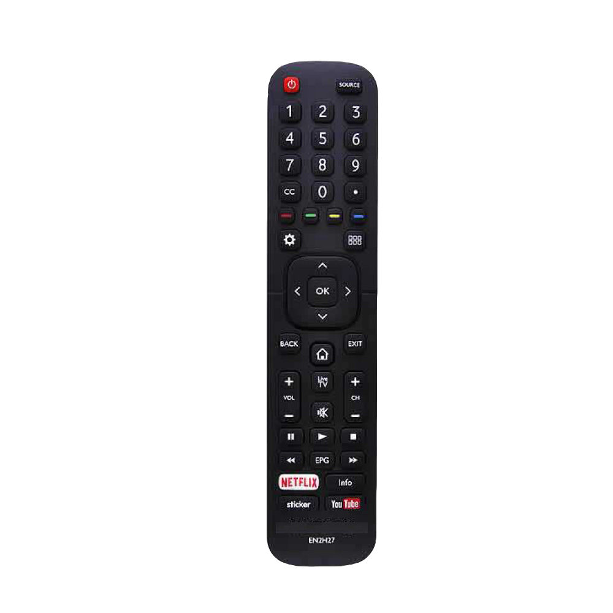
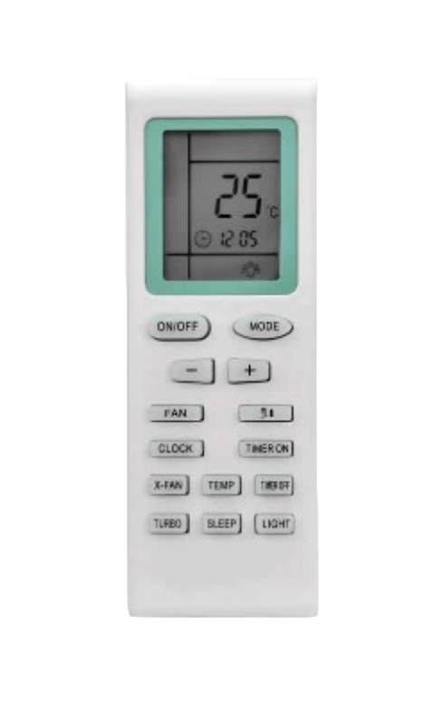
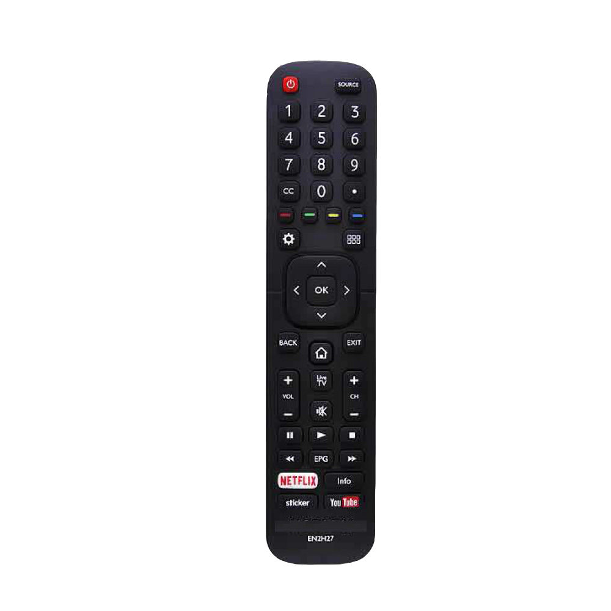
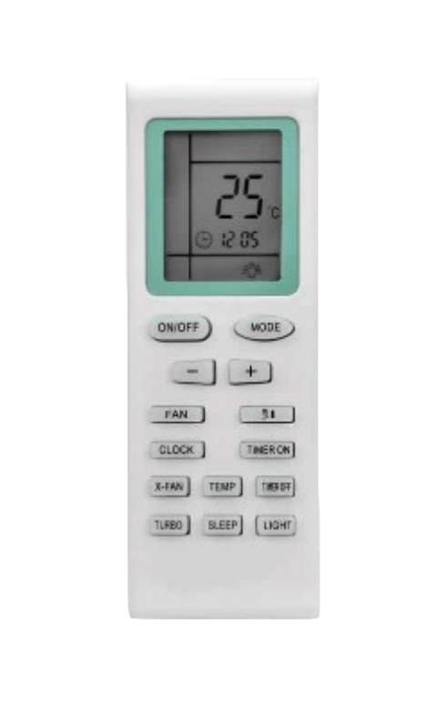

CONTROLES REMOTOS
 



Contamos con una gran variedad de controles remotos para televisores y aires acondicionados, a continuación te detallamos los beneficios de nuestros productos:
- El control que te entregamos es similar al tuyo.
- No requiere programación.
- Te lo llevás con pilas incluídas.
- Tenés garantía por 6 meses.
¿Qué necesito para pedir mi control remoto?
- Traés tu control anterior, ó la marca y el modelo (que figura en la parte trasera) de tu televisor.
- Te entregamos el mismo u otro que funcione correctamente si no tenemos el mismo.
- Lo llevás directamente a funcionar por que no requiere programación y te lo entregamos con las pilas.